Who am I?
I'm a high school student from Seven Lakes High School who enjoys coding in their free time. In addition to making a large quantity of weird and interesting projects (mostly games or tools or simulations), I also play Go (also known as Weiqi or Baduk) and compose music.
Coding Experience
I have been programing in Python for 8 years, Java for 6 years, HTML/CSS/JS for 5 years, and C++ for 5 years. In addition, I have a little bit of experience with C#, MATLAB, and a few other languages. I am currently learning Rust. Check out some of my projects!
Musical Experience
I have been playing the piano for 9 years and the clarinet for 5 years. I am also an amateur composer. Check out some of my compositions!
Go experience
I have been playing go for a bit more than a year and am currently at a rank of 10kyu on OGS (equivalent to about 1250 elo, for those more familiar with the chess rating system).
My favorite projects
In no particular order. Feel free to try these out! The title of the project is the link to the project. Projects without the “Supports Mobile” tag may not work on mobile devices.
-
Shader Playground Tool
A web-based editor for GLSL fragment shaders (which basically run code a bunch of times in parallel on the GPU to determine an output color for each pixel) as well as "scriptable uniforms" which allow the user to programmatically update uniforms (global constants in GLSL) using Javascript. See example code here and here .
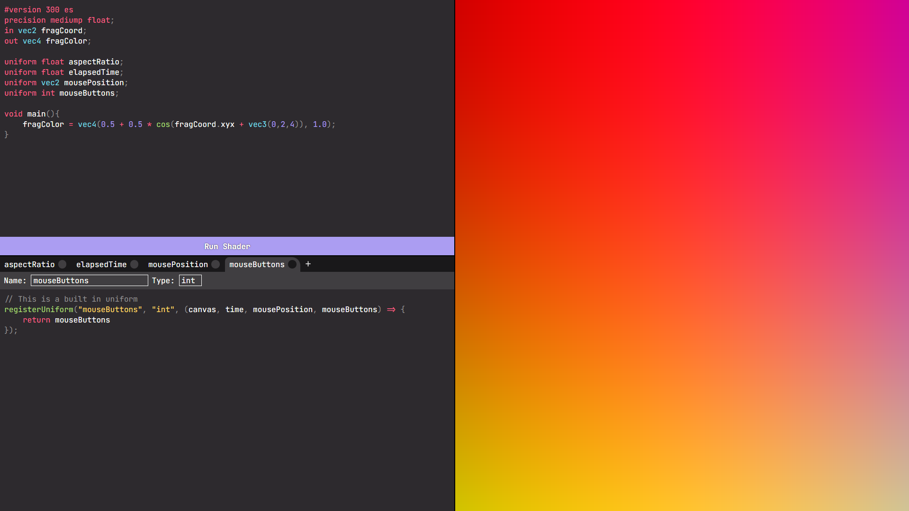 The default shader. 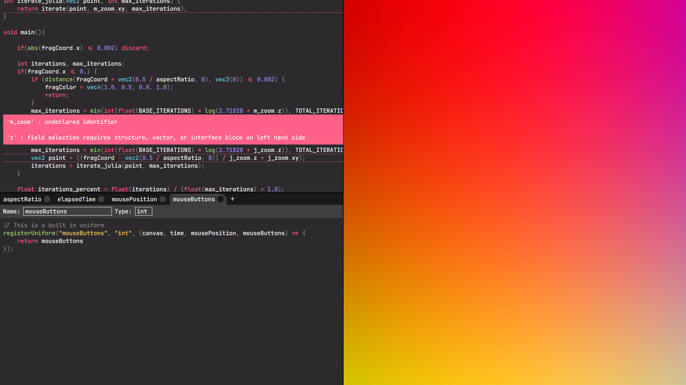 If you have errors, the editor will tell you when you try to run the shader. 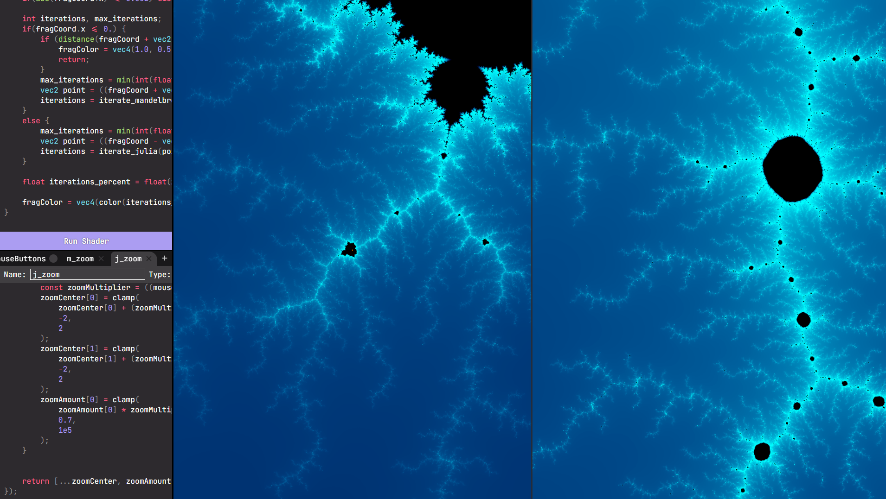 A Mandelbrot/Julia set explorer, using two scriptable uniforms to control zooming independently on the Mandelbrot set and Julia set. There is only one output image; I used a condition in the shader to determine if each pixel is in the left or right half of the image to figure out which fractal to render. I really like the color scheme I used in the shader. -
Go Capy Go! Game Supports Mobile
A retro-style platformer/puzzle game that will make you think, hard. Get the capybara to the candy with the help of a ghostly helper! I made this with the help of Eva Li, Rounak Rai, and Santiago Espinoza for a local game jam.
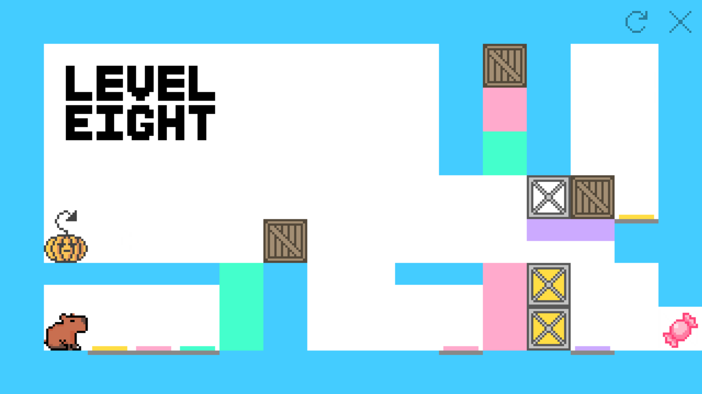 The final and hardest level in the game, "Remote control". -
Music Analyzer Tool
A tool I made to help me transcribe music (figure out the notes from an audio recording). It shows you the spectrum of the audio as it plays and tries to identify peaks (which indicate a note or a harmonic of a note that might be played). I have found that it has tripled my efficiency at transcribing music, as it helps me identify softer notes in complex chords that my ear might have missed. Built with Next.js
 The UI of the application. From the peaks, we can guess that there is probably just one
note being played, B2 (Remember that the properties of most instruments will result in
extra peaks above the main peak according to the harmonic series).
The UI of the application. From the peaks, we can guess that there is probably just one
note being played, B2 (Remember that the properties of most instruments will result in
extra peaks above the main peak according to the harmonic series).
-
Reaction-Diffusion simulator Simulation
A really cool simulation that I wanted to implement. The idea is to simulate a pool of two kinds chemicals, A and B, which react according to the chemical equation 2B + A → 3B and gradually diffuse at different rates. In addition, chemical A is constantly added and chemical B is constantly removed. The simulation does not track individual molecules; instead, it tracks the concentration of A and B at each point and updates them according to the differential equations governing the reaction and the diffusion. With an appropriate choice of parameters, the simulation can display surprisingly complex behavior that looks almost biological. I had to recall my AP Chemistry knowledge to get the differential equations right for updating the simulation.
The simulation run with diffusion radius = 1, relative diffusion rate = 0.5, feed rate = 0.02, and remove rate = 0.06. The simulation resembles cell division. Note that black means full concentration of A, deep blue represents chemical B, and a greenish/cyan tint indicates a lack of chemical A 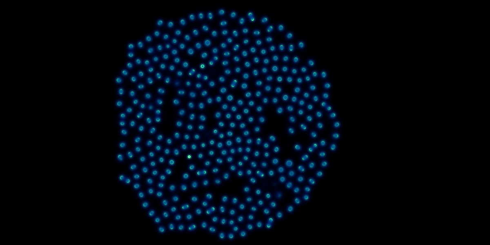 The simulation with the same parameters, about a minute later. I turned on "Fancier Display" for this screenshot, which highlights the areas where the concentrations of reactants are changing faster. The simulation run with diffusion radius = 1, relative diffusion rate = 0.5, feed rate = 0.02, and remove rate = 0.05, after a very long time. The simulation is chaotic and very different from the last one, and we can see the beginning of an explanation for the cell-division-like behavior of the last simulation from the way that the ends of a "reaction front" twist and spiral. This is even more evident when "Fancier Display" is turned on. The simulation run with diffusion radius = 1, relative diffusion rate = 0.688, feed rate = 0.036, and remove rate = 0.057, after a very long time. This time, the simulation looks uncannily disturbing. 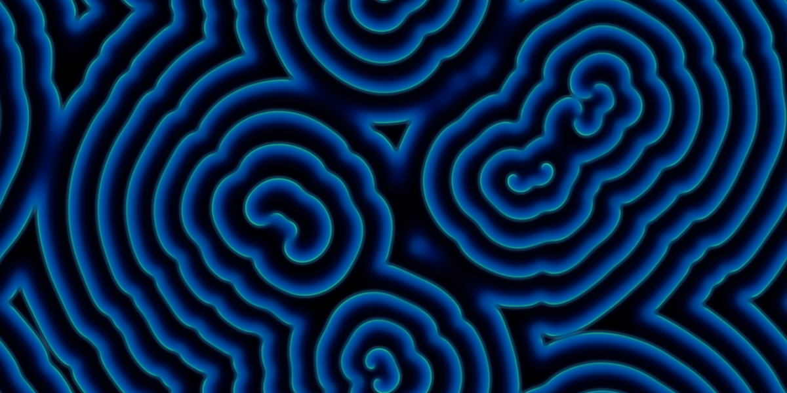 A spirally simulation run, with relative diffusion rate = 0.7, feed rate = 0.02, remove rate = 0.05. I couldn't get this to work directly from the starting condition and had to use other parameters to let the system become more interesting and chaotic before switching to these parameters. -
Mushroom Mania Game Supports Mobile
A retro-style game based on a game from coolmathgames.com, with original background music by me. A and D to move the mushrooms, W to rotate, S to drop (on mobile, WASD are replaced with swiping up left down right). Merge 3 or more mushrooms of the same kind to get a better mushroom and some points. I accidentally got myself and quite a few of my friends (I think there were 6) addicted to this game after we play-tested it.
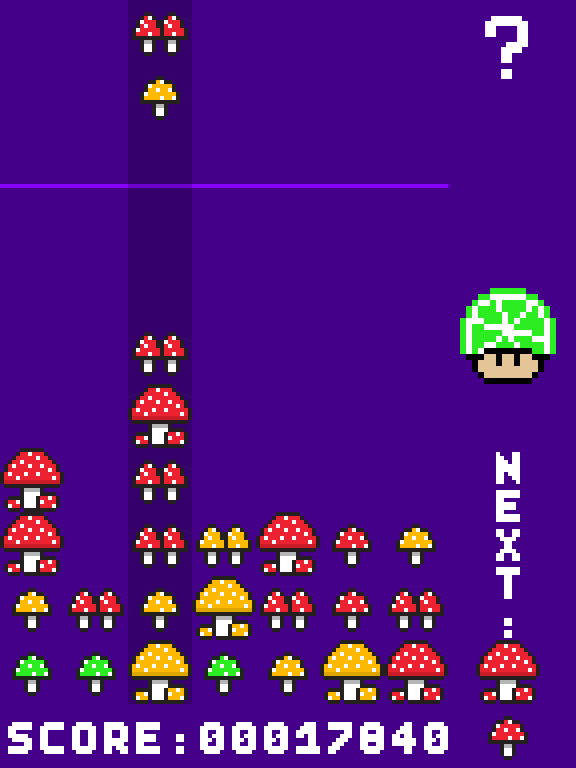 A typical game of Mushroom Mania. 3 single mushrooms merge to a double mushroom, 3 double mushrooms merge to a large mushroom, and 3 large mushrooms merge to a mushroom of the next color. Colors go red, gold, green, blue, and finally black (I have never managed to get a black mushroom before). -
Klotski (华容道) GameSupports Mobile
A chinese sliding puzzle. Get the big piece labeled 曹 to the exit at the bottom. These puzzles are harder than they look — many require 50+ moves, with the last one requiring more than 130!
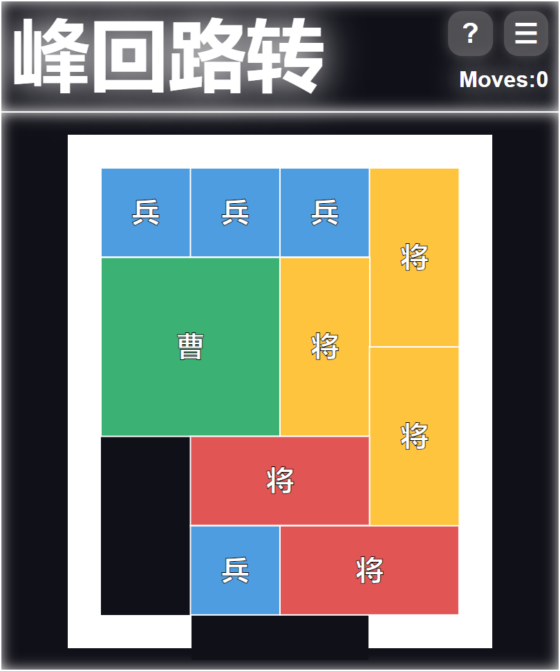 The last (and hardest) puzzle in my collection, requiring around 140 moves to solve. 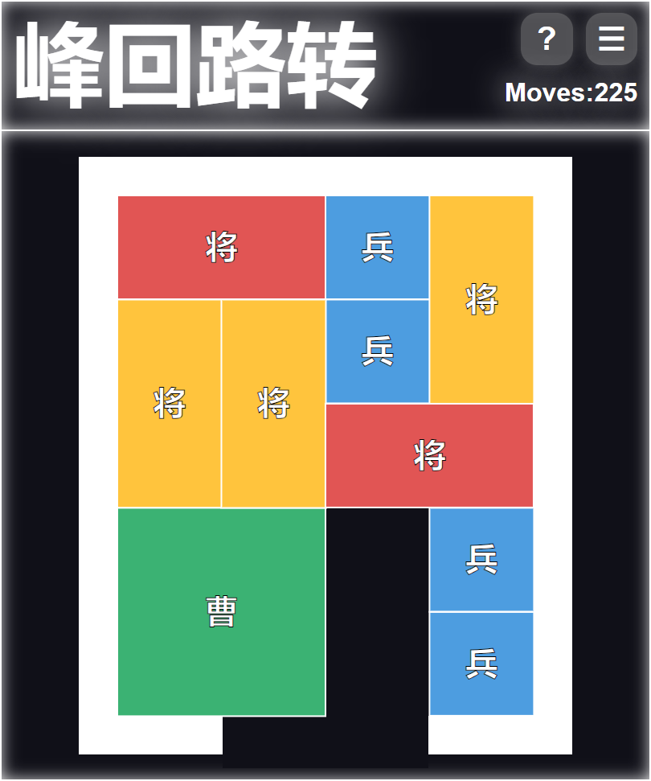 One step away from success! -
Wordle GameSupports Mobile
Wordle. Supports 4-12 letter words, with easy and hard difficulties.
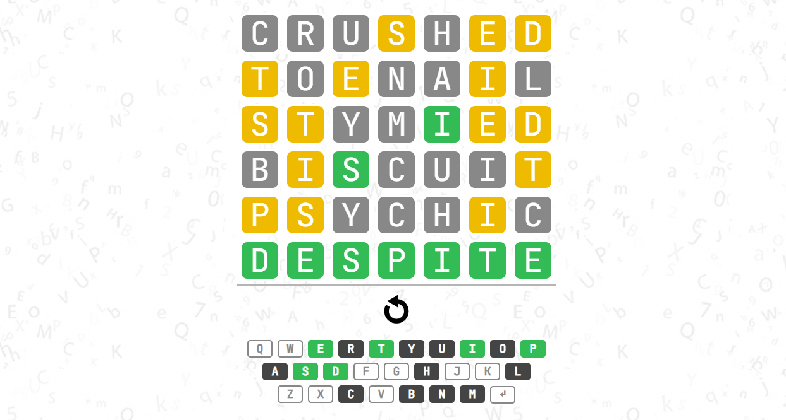 A typical game of 7-letter wordle. I find that "CRUSHED TOENAIL" is a very effective starting pair. -
Three body simulator Simulation
Another really cool simulation that I worked on. Simulates three massive stars in 3d space interacting through gravity.
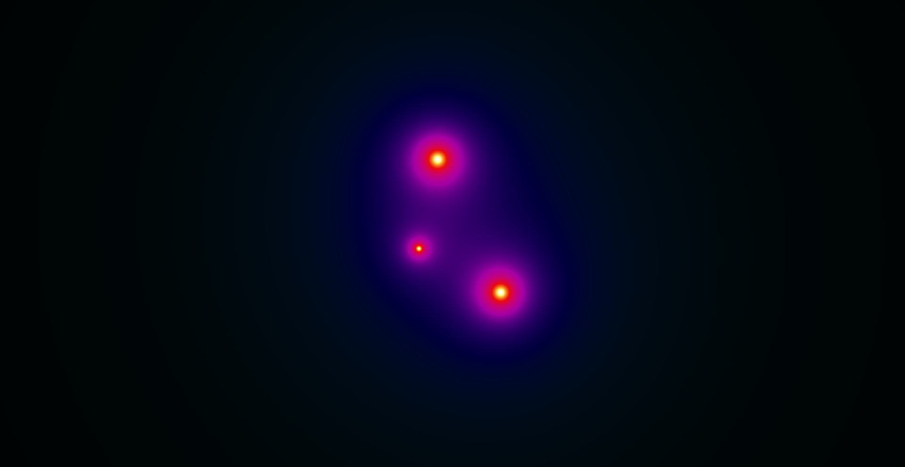 -
Five in a row (Gomoku, 五子棋) GameSupports Mobile
A classic board game. Get five stones in a row! The AI I made for this (using just pattern recognition, no neural networks or even tree search) is hard, but beatable.
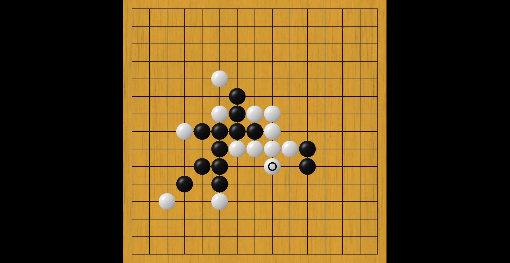 I lost! There is no way to prevent white (computer) from making 5 in a row 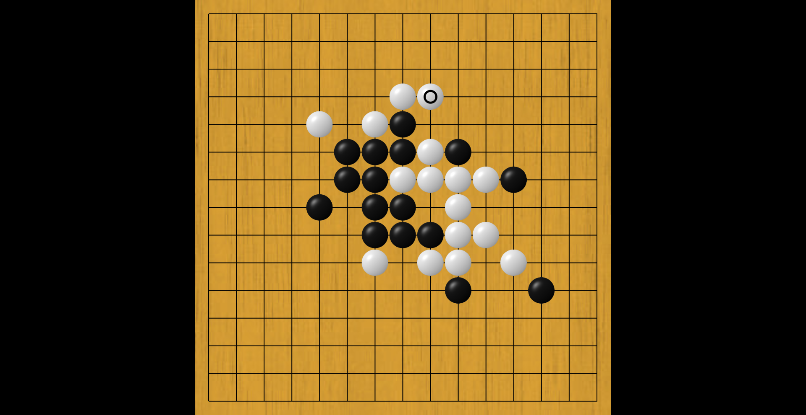 5 in a row can also be achieved diagonally. Here, black (player) played a nasty trap to force a win. -
Light Puzzle Game Simulation Algorithm Supports Mobile
An interesting puzzle. You start with a random grid of lights that may be on or off, and can toggle all the lights in any 3x3 square centered on a light in the grid. The goal is to turn all the lights on. I wrote a solver for the general case using a bit of linear algebra (Gaussian elimination mod 2).
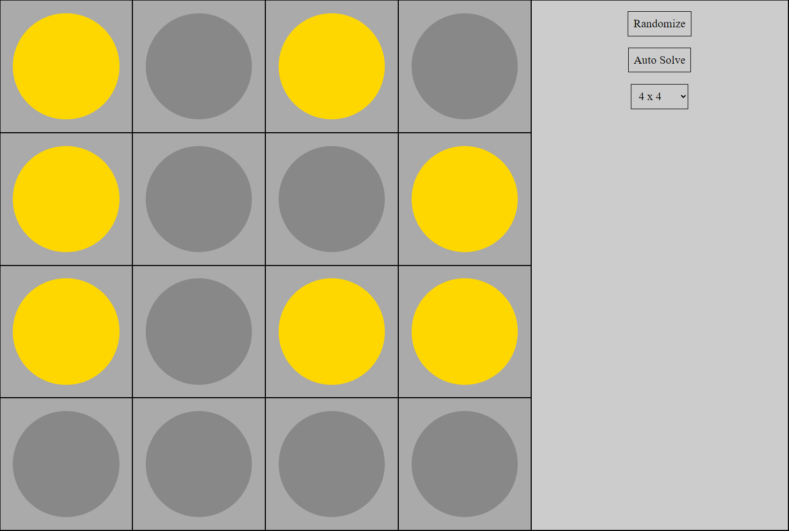 Even the 4x4 case is surprisingly non-trivial. Try it out! 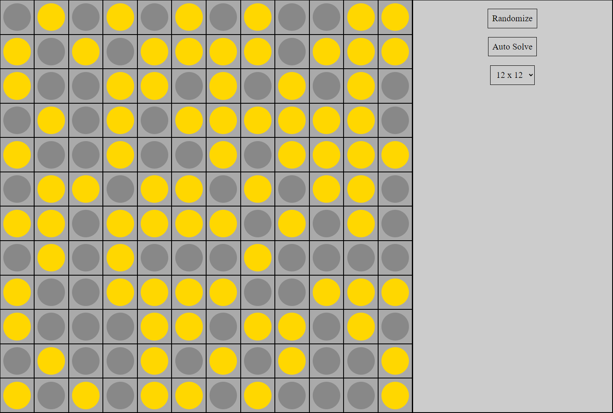 Thought the solver can go higher, I put the maximum size at 12x12. Good luck solving this one by hand! 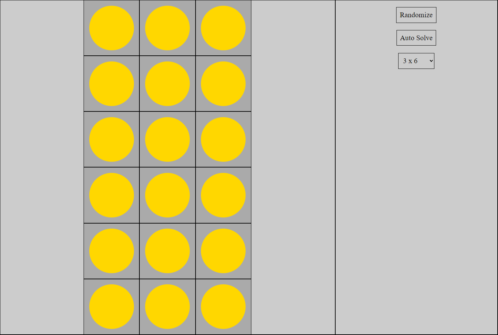 I also have rectangular puzzle sizes, such as 3x6. Interestingly, not every board size is always solvable — for example, some initial configurations for 7x7 and 11x11 boards do not have solutions. I don't know why this is the case, nor do I know the general rule to determine if a board size is always solvable. -
Circle good, Square bad GameSupports Mobile
A bullet hell game. Eat the circles and avoid everything else! Best played on a touchscreen device, although mouse is okay. Touchpad highly discouraged.
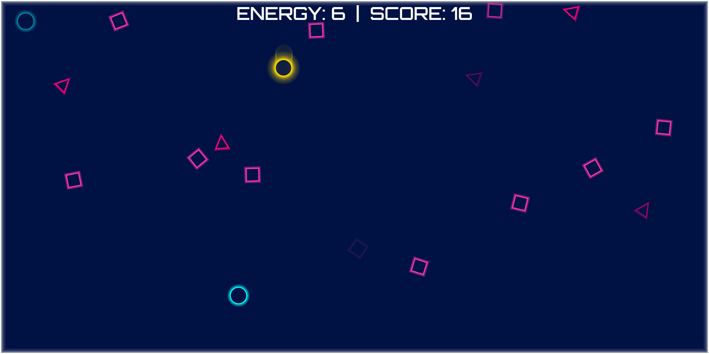 Those pesky triangles ate up all my energy. When your energy reaches zero, the game is over. Eating circles gives you energy, and getting hit makes you lose energy. -
Maze Game Game
A maze game featuring keys and obstacles. All levels are randomly generated, so some may be easier than others. However, all are guaranteed to be solvable.
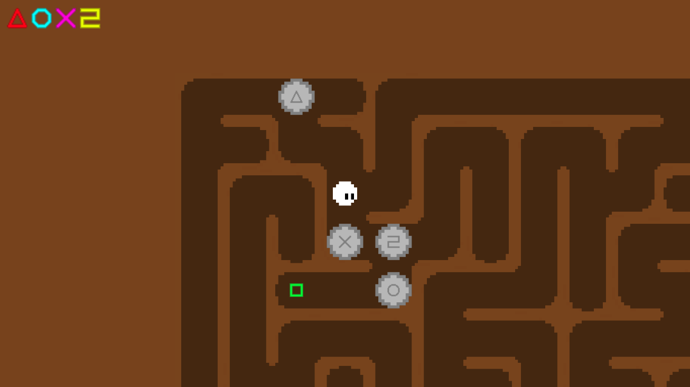 Since I have the 'X' key, I will be able to get through the 'X' obstacle here, which will consume the key. -
Space Junk Game
One of the first HTML/CSS/JS games I wrote. You control a spaceship with arrow keys and avoid the junk and collect golden hearts.
My favorite unfinished projects
-
Display Math Tool
Math editor thing I made, a bit similar to LaTeX.
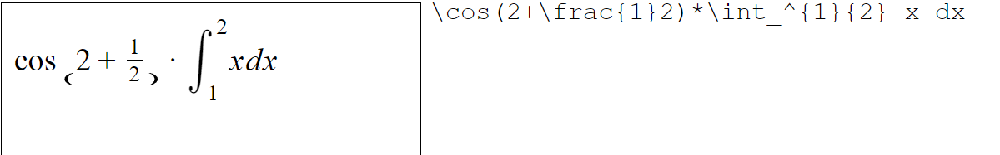 Yea... that ain't right... -
SVG editor Tool
Edit the raw XML of an SVG. Has rudimentary syntax highlighting and real-time preview. You can save SVGs to your computer as an svg file or png file.
Short compositions
For you to enjoy (or not. Some of these aren't so good). All of these are original compositions, with audio generated by Musescore.
-
Calm
Improvised at night. I had just finished a difficult project and this is what tired old me came up with.
-
Raindrops
Improvised during a thunderstorm.
-
Journey
I wanted to see what would happen if I stacked a bunch of fifths on top of each other. This is the result.
-
Gnome dance
Looping background music for a scene in an RPG I made for a game jam. Unfortunately, the game never got finished.
-
Fugue in G minor
A fugue for 3 clarinets, in G minor. This is my first attempt at writing a contrapuntal piece; I think I did reasonably well.
-
The enchanted forest
An otherworldly-sounding piece. I really like the middle section in the Phrygian mode. This was submitted for an AP Music Theory assignment on using the church modes.
-
Epilogue
I imagine this might be a sad ending to a movie? This was an exercise in voice-leading I did, also for an AP Music Theory assignment.
-
Optimistic Theme
I sat down one day and wanted to write something happy to make me not sad. This is the result. I think it worked.
-
Abandoned Circus
A short 8-bar composition I came up with. For some reason, it gave me dark, circus vibes.